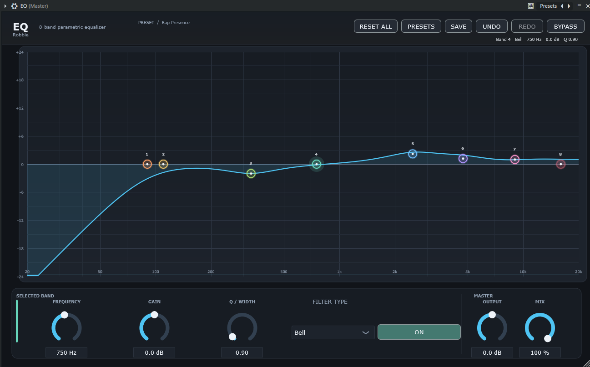

EQ
Precision shaping with eight fully adjustable bands, a spectrum display, fast presets, and flexible controls.
Creative audio plugins built for the way you work. Shape cleaner vocals, refine instruments and discover your sound with EQ. Completely free.

FEATURED · EQ v1.4Precision shaping with eight fully adjustable bands, a spectrum display, fast presets, and flexible controls.
An independent collection of straightforward tools, developed with a focus on easy controls and practical workflows.
Controls where you expect them, so you can keep your attention on the music rather than buried menus.
Explore factory presets, tweak a sound, and save your own settings to revisit later.
EQ includes Undo/Redo and adjustable bands. Try a different curve and keep what sounds right.
EQ by Robbie comes with a simple Windows setup installer. No Visual Studio, CMake, or manual copying of VST3 files is required.
INSTALL GUIDE ↗Download the free Windows 64-bit installer.
Follow the installation wizard to install the EQ plugin.
Open Options → Manage plugins → Find installed plugins. Search for EQ.